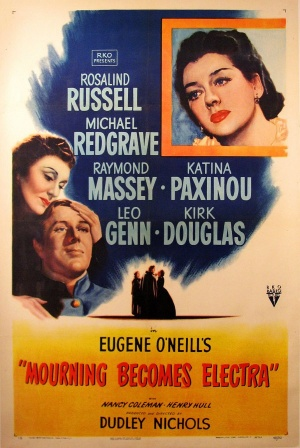
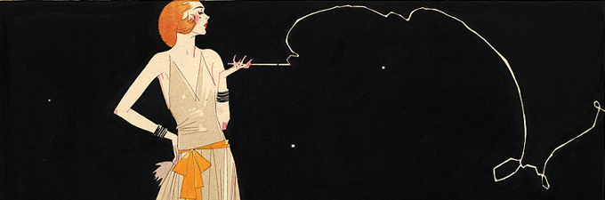

MyMothers Love
on Mt. Olympus
Eugene O'Neill: Mourning Becomes Electra
Summary
Mirrors the Greek Myth of Electra
Ezra: Father
Christine: Mother
Lavina: Daughter
Orin: Son
Adams Brant: lover
The Homecoming: Lavinia finds out her mother is with another man. Christine does not tell Ezra, but than Ezra find out. Christine poisons him.
The Hunted: Lavina tells Orin about Brant, Christine tells Orin not to believe Lavina. Than Orin finds out and kills Brant. Than Christine kills herself.
The Haunted: Orin kills himself.

Electra Complex
-love mother
-moves from mother when the girl realises that neither she or her mother has a penis, so the girl turns to her father in hopes of having a child with her father to make up for the lack of a penis
-the girl cannot please her mother without a penis
-penis envy
Oedipus Complex
-love mother
-moves away from mother for threat of castration from the rival, the father
-boy begins to identify with the father, for father is seen as a figure of law, and it hopes to be with the mother
-thinks if he is like the father, than he can win his mother's love
-erotic attachment of a child for the parent of the opposite sex
-hostile or jealous feelings toward the parent of the same sex
Thesis: Freud reflected the values of the time period as seen as in the play Mourning Becomes Electra by Eugene O'Neill.
Lavine+Ezra: Daughter+Father
I can't marry anyone, Peter. I've got to stay home. Father needs me.
He's got your mother.
He needs me more!
(The Homecoming, Act 1)
Christine+Orin: Mother+Son
Those Islands come to mean everything that wasn't war, everything that was peace and warmth and security. There was no one there but you and me...The whole island was you.
(The Hunted, Act 2)
Adams Brant+His Mother
You're so like your mother in some ways. . . I only know of one other woman who had it. You'll think it strange when I tell you. It was my mother.
(The Hunted, Act 3)
Proof in Era
-Freud gained popularity after WW1, 1920's, same era that O'Neill works were created
-Cecilia B. Stendaler (historian): "the twenties had seen widespread acceptance of Freudian theory and many extreme applications of it to the training of children"
-Frederick Lewis Allen: The Revolution in Manners and Morals:
petting parties, change from more conservative view of sex to the younger generation being more free; confession and sex magazines; more erotic movies
"The first requirement of mental health, according to Freud, was to have an uninhibited sex life..."
-criticisms from Church
Relevance
-idea of free love and sex is important to mental health
-Different aspects of Freud's ideas were seen in real life and in books
-books: O'Neill- incest
-in real life: free love, freedome of sex
While Freud's physical theories are not 100% accepted and proved, Freud inspired the freedom of sex in the 1920s which is seen in the the book Mourning Becomes Electra by Eugene O'Neill from the incestual desire.

Research Process
- Wanted a book with Greek Mythology
- Found Mourning Becomes Electra online; most famouse American book with Greek Mythology influence
- Read the play and Saw the movie
- Saw the reacurring theme of Freud, so made my thesis about Greek and Freud influence
- Found Evidence for both Greek and Freud influence
- Deleted evidence on Greek influence for it was too blatent
- Researched Eugene O'Neill and Freud's influence in the 1920s
- Made an outline with background information and relevence and evidence
- Wrote Paper
- Edited Paper
- Final Product
What I Learned
The junior theme is not as scary as the previous years made it seem. It took a lot of time and effort but the final product is something to be proud of. I learned that not procrastination does pay off. I finished my rough draft about 2 weeks before it was due. The rest of those two weeks I could edit and finish my history paper. It was so much more peaceful.Clearly, procrastination is not good.
I also learned how all types of subjects can come together, like in my case, I took knowledge (and sources) from my history class and psychology class and combined it into my english paper about a play.
I also learned that so many authors draw inspiration from their lives. Like Poe and Fitzgerald, O'Neill used his past to create his plays. O'Neill's life was dark and he faced many unhappy events which is prevalent in most of his plays.
Challenges
-reading all three cycles of the play and watching the extremely long play
-editing a super long paper
Highlight
The highlight was being able to connect what I have learned in history and psychology and apply it to english, and able to fully see that in reality all subjects are connected in one way or another.
In todays era, do you see the influences from other eras?